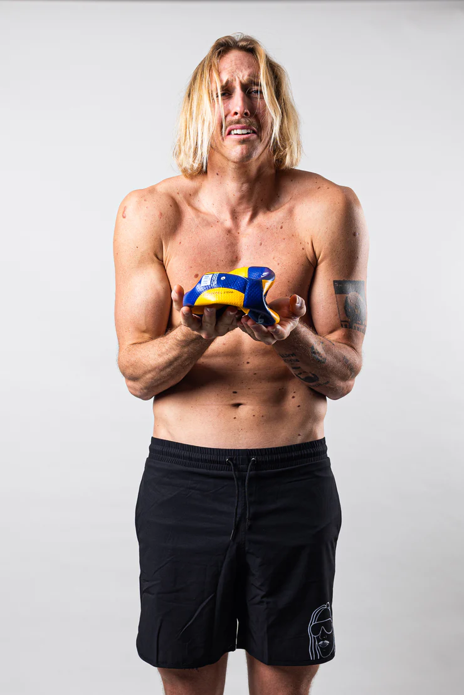
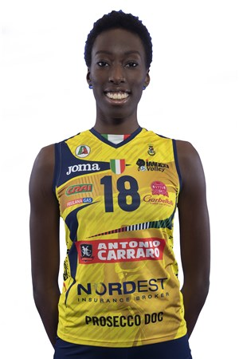
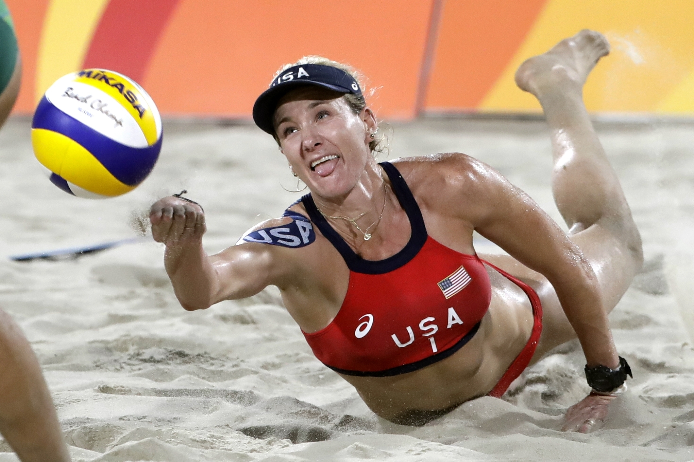

Big names
 Volleyball has been expanding at exponential rates since a couple of decades ago. Helping the sport to expand. New organizations, clubs, even Olympic teams were made. Some of the biggest names would include Taylor Averill, Patrick Gasman, Kerri Walsh Jennings, Paola Ogechi Egonu, and more. All of these players have cemented themselves as masters of their craft.
Taylor Averill
Such as Taylor Averill who plays on the US olympic team. He is originally from Portland, Oregon, moved to his now hometown of San Jose, Calif. Also graduated from the University of Hawaii in 2015. He has been to many tournaments in his career, even going to the 2018 FIVB World Championship and landing in 3rd place, beating out many of his peers. Also Ranked number 2 in the nation in hitting percentage in 2015 at .488% which is outstanding and almost unbelievable.
Paola Ogechi Egonu
Paola Ogechi Egonu is on the italy national women's team currently and as of yesterday the 16th of october, italy has shut out USA for bronze with Paola Ogechi Egonu leading the pack with 25 points and was named 2022 FIVB Nations League - "Most Valuable Player" (Wikipedia)She was born in Cittadella, in Veneto, to Nigerian parents. And even voiced in the Italian version of the movie Soul.
Kerri Walsh Jennings
Lastly there is Kerri Walsh Jennings, a beach volleyball champion. Kerri Walsh Jennings is a 6′ 3″ monster on the beach scene. She took home the gold in the 2016 RIO olympics with her partner April Ross. She has also taken home 3 other gold metals and a bronze metal and is a five time olympian. She is also married to Casey Jennings, another beach player and has three children. She has many records that she still holds today, such as being the most decorated beach volleyball player and one of three that have 2 gold medals. On top of that she also Holds the record for tournament victories (domestic and international) with 135 and for career earnings with $2,648,135.00(TeamUSA). And also wants to partner with 2000 Olympic indoor volleyball teammate Logan Tom for a beach volleyball spot for the 2024 Paris Games.
But there wouldn't be any big names without their teams. The main team in the news as of now 10/16/22 is the women's italy team with their shutout of the US for bronze. This came from the tournament “FIVB Volleyball Women's World Championship”, where italy and the US battled it out, but in the end italy won all three sets that were played.